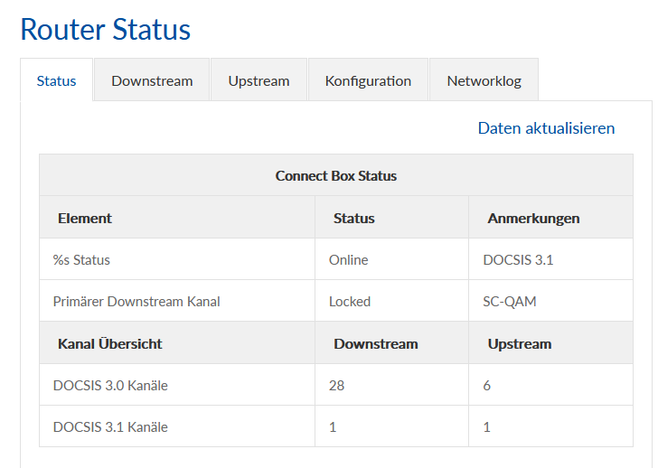

Guten Abend,
Ich hatte ca. 3 Wochen regelmäßige kurze (5-10 Minuten) Internetausfälle verteilt über den Tag und abends beim Streamen häufiger. Tarif wurde vor 4 Wochen von 150Mbit auf 300Mbit geändert. Die 300Mbit kamen auch an. Im Einsatz war die Connect Box 1. Laut Techniker soll ich Modem tauschen. Gesagt getan, habe eine Fiber Box 2 geholt und die alte im Shop gelassen. Seit Stunden und einigen Anrufe bei der Technikhotline keine Verbindung und es steht nur "Registrierungsfehler". Angeblich sieht Magenta das Modem online aber es gäbe Signalprobleme. (Die Leitung hat nun 8 Jahre kein Problem gemacht)
Die Daten S/N und Mac sind richtig hinterlegt (anfangs stimmte bei Magenta die S/N nicht mit dem tatsächlichen Modem überein)
Wenn ich mich im Forum umsehe, finde ich Berichte wo User Tagelang bis zu Wochen keine Aktivierung hatten. Laut Hotline ist Modem aktiviert, war beim Telefonieren auch schon mit Experten verbunden.
Hat jemand ähnliche Erfahrungen mit Registrierungsfehler und hat diese lösen können?
Techniker soll demnächst kommen und messen! Aber was dann?
Anbei noch Bilder vom Modem.
Vielleicht hat ja jemand einen Tipp.
Danke lg Martin
Hallo @Martin1977 , herzlich willkommen in der Magenta Community. Hier versuchen User anderen Usern zu helfen. Den Fall eines Registrierungsfehlers hatten wir hier noch nicht. Ich drücke dir Daumen, dass der Techniker den Fehler findet. Gigakraft Gaming 300 nutzt den Datenübertragungsstandard Docsis 3.1, hier sollten nach Behebung des Fehlers sowohl beim Downstream- als auch Upstream-Kanal eine "1" stehen. Bei mir hat der Wechsel von der Fiber Box 1 auf die Fiber Box 2 glücklicherweise problemlos funktioniert. idealerweise sollte der Netzwerkstatus in etwa wie im nachstehenden Screenshot ersichtlich aussehen. Liebe Grüße, Georgie

Hi All,
Techniker war top, hat Fehler sofort erkannt. Damals (vor 8 Jahren) wurde in der Wohnanlage Dosen eingebaut, die einen Stecker für Internet und einen für TV hatten. Das neue Modem hat nur noch ein Kabel beigelegt, welches mit einem Adapter an der TV Dose anzuschließen ist. Die alte Dose sendet das Internet Signal aber nicht über diese Buchse und somit ging nichts mehr.
Neue Dose eingebaut, 5 Minuten gewartet und dann ging wieder alles!
Solche Techniktermine sind mir die liebsten.
LG Martin
Habe jetzt auch 20 Downstream und 8 Upstream Kanäle.
Bearbeitet von Martin1977
Nachtrag .... zu früh gefreut.
Nach ca. 6 Stunden Modem wieder offline und Registrierungsfehler, kein RF Signal ...
Hotline sehr freundlich und hilfsbereit, konnte jedoch nicht lösen. Bekomme Leihmodem und Techniker muss wieder kommen.
Komisch ist, dass nach weiteren 90 Minuten Modem plötzlich wieder online war, bin mal gespannt wie lange? Irgendwas passt da nicht!
Bearbeitet von Martin1977Und schon wieder offline ... als auf die Technik warten.
Hi All,
ich poste mal ein paar Fehlermeldungen, vielleicht hat hier jemand schon Erfahrung und Lösungen dazu:
Gesternabend hat das Modem dann rot & gelb geblinkt, habe es mal komplett vom Strom & Antenne genommen.
LG Martin
Hallo @Martin1977 , war der Techniker inzwischen bei dir und konnte dein Anliegen lösen? Falls nicht, melde dich bitte nochmals bei unserem Technikteam 0676 2007777 (Mo-So von 8-22 Uhr) und kläre mit unseren Kolleg*innen welche weiteren Schritte nun unternommen werden können. Liebe Grüße, Doris
Hallo!
@Doris676
Mittlerweile waren 2 Techniker da!
Der erste hat die neue Dose eingebaut, wie weiter oben beschrieben!
Das Modem war am 25/04/2022 ca. 13 Stunden online, dachte schon alles OK, aber am Abend so um 21:00 Uhr wieder Ausfall.
Am Dienstag 26/04/2022 wieder Modem eingeschalten und es lief wieder. An diesem Tag war auch der zweite Techniker da und hat die Leitung innen, außen, Steckerverbindungen, Signalstärke udgl. geprüft und alle schaut sehr gut aus. (300MBit Down / 50 MBit Up / Signal angeblich auch gut! Der Techniker meinte auch, dass es die Tage davor "massive" Probleme in der Region gab.
OK, freute mich. Das Modem ist aber in der Nacht so um ca. 23 Uhr wieder ausgefallen. (Rot / Gelb blinkend)
In der Früh so um 6 Uhr wieder angesteckt und siehe da es ging wieder! Ich poste auch noch ein paar Screen Shot's!
Vielleicht kann wer mit den Daten etwas anfangen (Signalstärke udgl, Kanäle,....)
Ich werde heute wieder die Technik anrufen!
Kann es sein, dass die Leitung den Gaming Tarif mit 300MBit & DOCSIS nicht schafft. (Früher gab es ja bei dem Tarif mit 150 MBit keine Probleme - die fingen erst an nach Übernahme der Firma GFI Speed durch Magenta und den Upgrade auf Gaming 300)
Es ist zum Verzweifeln, da freut man sich, dass alles geht und dann fällt beim Streaming das Internet aus (Kinder sich schon sehr genervt) und wenn man Home Office macht, zittert man immer ob die Verbindung bei Audio's & Videotelefonie halten wird)
Fehlermeldungen sind nach wie vor!
NO Ranging Response received T3 Time Out ... zum CMTS Server
CM-Status message sent Event Type Code 24
TCS Partial Service
Initializing Channel Time Out Expires
MIMO Event
Was auch aufgefallen ist, wenn das Modem gelb/rot blinkt dann steht in der Log plötzlich das Datum 01/01/1970
Bin für jede Hilfe dankbar!
LG Martin
NACHTRAG: Eingebaut wurde damals bei der Installation vor 8 Jahren ein 4Port Splitter Kathrein EAX 24 / 21610001 5 - 1000MHz
Nachtrag 2:
Technik Hotline 1: Das liegt daran, dass ein TV und ein Powerline Adapter an den LAN Buchsen des Modem liegt. Besser wäre alles mit WLAN zu betreiben und auf Mesh (von Magenta) zu wechseln. Es wurde geraten das Modem rückzusetzen und mal 2 Tage nur mit WLAN zu testen ob es dann auch Ausfälle gibt!
Gesagt getan, Modem Reset durchgeführt - seit dem findet das Modem wieder keine Verbindung (Registrierungsfehler, T3 Time Out, Gelb blinkend)
Technik Hotline 2: Nochmals Modem neu gestartet und wollte einen Techniker wegen Signalmessung vorbei senden. Der Techniker war eh gestern da und hat bestätigt, dass dies Super Werte auf meiner Leitung sind! Somit haben wir vereinbart, dass ein nochmaliger Modemtausch probiert werden soll!
Also werde ich mir ein Tauschmodem abholen und von vorne starten!
Bearbeitet von Martin1977
Hallo @Martin1977 , es tut mir wirklich für dich leid, dass es im Zuge des Modemwechsels zu solchen Problemen kommt. Ich bin kein Techniker, aber ich denke das Problem liegt beim DOCSIS 3.1 Kanal. Der Router Status sollte bei Upstream eine "1" anzeigen und keine "0". Vielleicht solltest du das beim Kontakt mit der Technik hervorheben.
Ich bin auch vor kurzem auf eine Fiber Box 2 gewechselt, glücklicherweise völlig problemlos. Die Dose an der Wand war bei mir schon da, als ich 1998 eingezogen bin.
Bei mir sieht der Router Status so aus:
Hallo!
So ich habe mir am Mittwoch das neue Modem geholt. Angeschlossen und es ging nach einiger Zeit online.
Nur das "Telefon" zeigte Fehler (Stört mich aber nicht)
OK, Hotline angerufen, da ich nach wie vor keinen Docsis 3.1. Uploadkanal habe. Hotline meinte, am Besten das Modem mit Hardware Reset zurücksetzen, dann verschwindet der Fehler und auch die Upload Kanäle werden passen! LEIDER wieder nicht, aber Modem war wenigstens online.
Donnerstag und Freitag ging es dann gut.
Freitagnacht Totalausfall, blinkte wie verrückt => Erneuter Anruf bei der Hotline.
Techniker 1: Alles Ok, es liegen keine Störungen vor, aber das Modem sei noch nicht registriert. Ich war aber schon 2 Tage online, Techniker versteht das nicht und hat herausgefunden, dass noch 2 Modem bei mir eingetragen sind. Die Daten wurden richtig gestellt und die Registrierung wurde im Hintergrund durchgeführt. Modem Reset durchgeführt aber ging wieder nicht online! (mittlerweile muss aber schon T Mobile Firmware drauf sein, da nach einem Reset kein UPC mehr kommt!
Techniker 2: Ganz klar warum sie nicht ins Internet kommen, wir haben einen großen Ausfall in ihrem Block seit der Früh. Das hätte Techniker 1 wissen müssen, es gebe Probleme mit dem Pegel! Ich soll einfach warten und bekomme einen Tag gutgeschrieben und tatsächlich am Abend war Modem online!
Am nächsten Tag in der Früh bis ca. 10 Uhr alles gut, danach war ich außer Haus und um 16 Uhr erneut Modem blinkt immer nur gelb mit Registrierungsfehler.
Also wieder Hotline angerufen: Es liegt keine Störung vor, alle Nachbarn sind online. Sie sende mir jetzt wieder einen Techniker!
(Ich lass das Modem jetzt mal weiterblinken und hoffe, dass der Fehler auch besteht, wenn der Techniker im Haus ist, vielleicht findet dieser ja dann den Fehler)
Meine Laienvermutung ist, dass in der Hausanlage X Kunden durch die Übernahme zu Magenta den schnelleren Tarif (Gaming300) gewählt haben und mein Anschluss wohl der letzte ist und die Dämpfung / Pegel nicht passen und mein Modem die Verbindung verliert. (Früher ging ja 8 Jahre lang alles gut, zuerst mit 20, dann 40 und dann 150 MBit.)
Jetzt ist es schon einige Wochen schon sehr mühsam, aber ich möchte bei dem kabelgebunden Internet sehr gern bleiben und nicht auf eine mobile 5G Alternative bei Magenta (oder auch bei der Konkurrenz) wechseln.
Hat jemand eine Info welche dBmV Werte man bei Down & Upload Docsis 3.0 & Docsis 3.1 haben darf, damit die Verbindung stabil bleibt?
Danke & LG Martin
Das hätte ich gefunden!
Downstream Power (-15dBmV to +15dBmV) - measure of the signal level received by the cable modem
Most modems are rated from -15dB to +15dB, however it's best to have it between +8dB and -8dB. Anything less or more than that and you may have quality issues.
Upstream Power / Modulation(35dBmV to 55dBmV) - the strength of signal transmitted by the cable modem
Generally a lower this number is better. Above 53dB will most likely cause problems, over 57dB and you probably won't be able to connect. Ideally between 40 and 50dB. L
Ich glaube also, dass es doch an dem Uplaod DocSis 3.0 Werten liegt, da stand immer 56dBmV.
LG Martin
Ich habe das Modem über Nacht vom Strom genommen. Heute NM wieder eingeschalten und plötzlich ist es online und auch die Upstream Signalstärke liegt bei ~ 45dBmV ... das wären ja gute Werte!
Die Frage ist wieder wie lange! Wenn es so bleibt und der Techniker am Mittwoch kommt, dann wird es wieder heißen, dass die Werte gut sind und der Techniker geht wieder und dann wird vermutlich nach paar Stunden das ganze von vorne losgehen! (Außer sie haben doch etwas in der Anlage gehabt und korrigiert ;-) )
LG Martin
PS: DocSis 3.1 Upstream Kanal fehlt immer noch
Dear All,
Es scheint gelöst zu sein, bzw. habe ich nun bessere Werte, keine Fehler mehr im Networklog,....
Was wurde gemacht! Nachdem wieder nichts gegangen ist, ist ein dritter Techniker gekommen und hat alles gemessen, natürlich war alles OK, es ging ja zu dem Zeitpunkt als der Techniker da war :-) Er sagte mir, dass sie bei "Unwetter" immer wieder Probleme haben. Der Regen war für mich halt kein Unwetter aber egal. Dieser Techniker hat wenigstens alle Verbindungen gelöst, gemessen und wieder verschraubt und ging dann wieder und das Modem lieft genau 4 Stunden!!!
Wieder die Hotline angerufen und der Techniker meinte, tauschen wir das Modem nochmals aus. OK - bin wieder zum Shop gefahren und habe das dritte Modem abgeholt.
Zuhause ausgepackt und siehe da, das erste Modem, dass wohl Originalverpackt war. (So verpackt waren die anderen 2 Modems nicht)
Angeschlossen und ich war in wenigen Minuten online. Am Abend gab es dann noch ein paar kurze Ausfälle!
In der Nacht hat sich das Modem dann die SW geholt und war dann nicht mehr im UPC Design sondern im T-Mobile Design.
Seid dem mittlerweile doch 2 Tage gab es laut Log nur einmal ein
Lost MDD Timeout;CM-MAC=xxxxxxx;CMTS-MAC=xxxxxx;CM-QOS=1.1;CM-VER=3.1;
Der DocSis Upstream Kanal ist zwar immer noch "0" aber Ok damit kann ich leben, wenn alles läuft. Die MBit kommen derzeit auch an!
Die Signastärke 3.0 Upstream haben derzeit um die 34 dBmV, was auch gut sein müsste!
Ende gut alles gut! Wenn das heute und morgen so bleibt, dann kommt das Leihmodem (mobile Daten) zurück!
Ich setze den Fall nun auf "GELÖST", das der Registrierungsfehler nicht mehr gekommen ist!
LG Martin
PS: Fazit: Habe wohl 2 "kaputte, gebrauchte" Modems erhalten und womöglich gab es aufgrund der Wetterlage vielleicht wirklich die eine oder andere Störung auf der Leitung und ich habe diese halt immer gleich mit bekommen, da ich da schon hellhörig war!
{kind=link}
{kind=link}
{kind=link}
{kind=link}
{kind=link}
{kind=link}
{kind=link}
{kind=link}
{kind=link}
{kind=link}
{kind=link}
{kind=link}